16 Pairwise Structural Report: GC/LBCL
17 GC/LBCL
This report is generated directly from the DuckDB warehouse. Pre-rendered HTML tables are not used. GO semantic clustering, when shown, is read as upstream annotation metadata rather than computed in the reporting layer.
18 Refactored comparison_overview_partial.qmd
18.0.1 GC/LBCL: Overview
This overview summarizes warehouse coverage, the current structural archetype assignment, and the continuity of the feature-space substrate for the selected normal–tumor comparison. The archetype summary should be read as a compact orientation layer before inspecting engine-specific metrics, quadrant geometry, robustness, and biological annotation overlays.
18.0.1.1 Warehouse coverage
| n_runs | chips | filter_regimes | group |
|---|---|---|---|
| 3 | hu35ksuba | limma, variance_comparison, variance_global | lymphomas |
18.0.1.2 Structural archetype summary
| group | comparison | archetype_label | archetype_stability | archetype_confidence | modal_quadrant | modal_quadrant_fraction | high_confidence_fraction | median_distance_from_boundary_z | stability_class |
|---|---|---|---|---|---|---|---|---|---|
| lymphomas | GC/LBCL | available_stable_QI | stable_among_available_assignments | low | I | 1 | 0 | 0.655 | stable among available assignments |
18.0.1.3 Feature-space substrate continuity
Filtering regimes are treated here as controlled perturbations of transcriptomic feature space. The following summaries should not be interpreted as direct platform replication statistics. Each Affymetrix platform defines a partially distinct observational embedding of transcriptomic state space. Cross-platform recurrence is therefore interpreted as convergence of higher-order perturbational organization across heterogeneous feature substrates rather than replication within a common coordinate system.
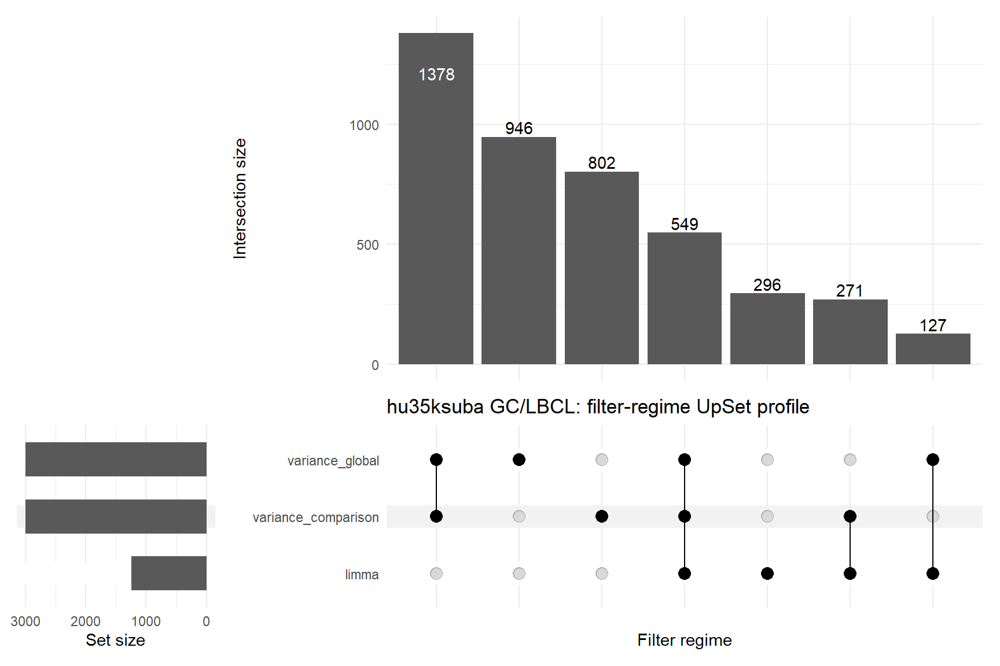
| Metric | Value |
|---|---|
| Filter regimes | 3 |
| Union probes | 4369 |
| Shared by all 3 | 549 |
| Shared fraction | 12.6% |
| limma probes | 1243 |
| Variance comparison probes | 3000 |
| Variance global probes | 3000 |
| limma-only | 296 |
| Variance comparison-only | 802 |
| Variance global-only | 946 |
| Median Jaccard | 24.0% |
| Feature-space stability class | feature-space perturbation-sensitive |
No overview rows available for this section.
18.0.2 GC/LBCL: Structural Grammar
This tab converts the structure-specific warehouse record into a compact interpretive grammar for the selected comparison. Biological annotations remain as functional overlays on the structural state rather than causal pathway assignments.
18.0.2.1 Archetypal state
The system occupies an unresolved structural perturbational state.
Modal Quadrant: I
Quadrant Stability Fraction: 1.000
Archetype Label: Available stable qi
Archetype Stability: Stable among available assignments
Structural Confidence: Moderate
18.0.2.2 Structural interpretation
GC/LBCL: The system occupies an unresolved structural perturbational state.
The structural pattern combines the following reader-level calls:
- Tumor manifold expands relative to the normal reference state.
- Expression geometry becomes more constrained or elongated.
- Spectral mass shifts away from dominant excess components.
- Variance is spread across more spectral components.
18.0.2.3 Structural geometry
Tumor manifold expands relative to the normal reference state.
Effective-Rank Δ: 0.157
Expression geometry becomes more constrained or elongated.
Kappa Δ: 17.590
Spectral mass shifts away from dominant excess components.
MP Excess Spectral Mass Δ: -479.257
Variance is spread across more spectral components.
MP Participation-Ratio Δ: 4.779
18.0.2.4 Latent geometry
Latent-space geometry was unavailable for this comparison.
18.0.2.5 Biological structural calls
| biological_structural_call | n_terms |
|---|---|
| Concordant compression | 24 |
| Concordant expansion | 4 |
18.0.2.6 Dominant GO semantic blocks
| semantic_block_name | n_terms | n_sig_complexity | n_sig_entropy_spectral | total_sig |
|---|---|---|---|---|
| protein binding | 73 | 2 | 12 | 14 |
| biological_process | 39 | 5 | 8 | 13 |
| enzyme binding | 31 | 1 | 8 | 9 |
| peptidase activity | 23 | 1 | 8 | 9 |
| positive regulation of cytokine production | 22 | 3 | 6 | 9 |
| negative regulation of intracellular signal transduction | 17 | 0 | 8 | 8 |
| DNA binding | 26 | 2 | 5 | 7 |
| RNA binding | 30 | 3 | 3 | 6 |
18.0.2.7 Top GO annotation examples
| mode | term | semantic_block | structural_call | joint_rank |
|---|---|---|---|---|
| GO_BP | response to ethanol | response to oxygen-containing compound | Concordant compression | 302.000 |
| GO_BP | regulation of protein neddylation | regulation of protein modification process | Concordant expansion | 302.000 |
| GO_BP | interferon-gamma-mediated signaling pathway | cytokine-mediated signaling pathway | Concordant compression | 302.000 |
| GO_BP | stem cell population maintenance | biological_process | Concordant compression | 302.000 |
| GO_BP | stem cell population maintenance | biological_process | Concordant compression | 302.000 |
| GO_BP | leukocyte cell-cell adhesion | leukocyte cell-cell adhesion | Concordant compression | 301.699 |
| GO_BP | positive regulation of multicellular organismal process | positive regulation of multicellular organismal process | Concordant compression | 301.699 |
| GO_BP | positive regulation of vascular associated smooth muscle cell proliferation | positive regulation of cell population proliferation | Concordant compression | 301.523 |
| GO_MF | histone acetyltransferase binding | enzyme binding | Concordant compression | 301.523 |
| GO_BP | positive regulation of endocytosis | regulation of vesicle-mediated transport | Concordant compression | 301.398 |
| GO_BP | macroautophagy | macroautophagy | Concordant compression | 301.398 |
| GO_BP | positive regulation of multicellular organismal process | positive regulation of multicellular organismal process | Concordant compression | 4.000 |
18.0.2.8 KEGG program overlay
No warehouse rows available for this comparison.
18.0.2.9 Hallmark / MSigDB program overlay
No warehouse rows available for this comparison.
18.0.2.10 Interpretive caution
These annotations identify functional systems that co-occur with the structural state. They should be read as structural-functional annotation, not as causal pathway assignment.
18.0.3 GC/LBCL: Structural Phenotype
This section summarizes the integrated structural phenotype across platform and feature-projection contexts. The first table is oriented as a descriptor-by-context matrix so that projection-sensitive structural shifts can be read horizontally across platform/projection runs.
18.0.3.1 Integrated structural phenotype
| Descriptor | hu35ksuba limma |
hu35ksuba var-comp |
hu35ksuba var-global |
|---|---|---|---|
| Complexity: Δ Effective Rank | 0.110 | 0.190 | 0.170 |
| Complexity: Δ κ | 29.170 | 10.700 | 12.900 |
| Entropy: Δ Spectral Entropy | 0.121 | 0.187 | 0.170 |
| Entropy: Δ Shannon Entropy | 0.878 | 0.878 | 0.878 |
| MP: Δ Spectral Entropy | 0.997 | 0.941 | 0.898 |
| MP: Δ Participation Ratio | 5.105 | 4.680 | 4.553 |
18.0.3.2 Metric-level summary
| engine | Metric | n_runs | mean_value | median_value | n_tumor_greater | n_tumor_lower |
|---|---|---|---|---|---|---|
| complexity | Composite Kappa | 3 | 22.110 | 11.420 | 3 | 0 |
| complexity | Effrank | 3 | 0.157 | 0.170 | 3 | 0 |
| complexity | Kappa | 3 | 17.590 | 12.900 | 3 | 0 |
| complexity | Sparsity | 3 | 0.000 | 0.000 | 0 | 0 |
| entropy | Shannon | 3 | 0.878 | 0.878 | 3 | 0 |
| entropy | Spectral | 3 | 0.159 | 0.170 | 3 | 0 |
| mp_spectral | Excess Spectral Mass | 3 | -479.257 | -522.830 | 0 | 3 |
| mp_spectral | Largest Eigenvalue Fraction | 3 | -0.340 | -0.335 | 0 | 3 |
| mp_spectral | Participation Ratio | 3 | 4.779 | 4.680 | 3 | 0 |
| mp_spectral | Spectral Entropy | 3 | 0.945 | 0.941 | 3 | 0 |
18.0.4 Complexity Engine
The complexity engine is reported using all probes retained after the active feature-projection filter. The omitted gene_set_mode field is therefore implicitly FULL for this tab and is not shown as a separate table column.
18.0.4.1 Complexity descriptor matrix
| Metric | hu35ksuba limma |
hu35ksuba var-comp |
hu35ksuba var-global |
|---|---|---|---|
| Shared Probes | 1243.00 | 3000.00 | 3000.00 |
| Normal Samples | 6.00 | 6.00 | 6.00 |
| Tumor Samples | 11.00 | 11.00 | 11.00 |
| κ Normal | 104.03 | 96.47 | 96.78 |
| κ Tumor | 133.20 | 107.17 | 109.68 |
| Δ κ | 29.17 | 10.70 | 12.90 |
| Effective Rank Normal | 1.31 | 1.35 | 1.35 |
| Effective Rank Tumor | 1.42 | 1.54 | 1.52 |
| Δ Effective Rank | 0.11 | 0.19 | 0.17 |
| Δ Sparsity | 0.00 | 0.00 | 0.00 |
| Direction | gained | gained | gained |
| Permutation p | 0.91 | 0.99 | 0.99 |
| Permutation FDR | 0.99 | 1.00 | 1.00 |
| Status | ok | ok | ok |
18.0.5 Entropy Engine
The entropy engine is reported using all probes retained after the active feature-projection filter. The omitted gene_set_mode field is therefore implicitly FULL for this tab and is not shown as a separate table column.
18.0.5.1 Entropy descriptor matrix
| Metric | hu35ksuba limma |
hu35ksuba var-comp |
hu35ksuba var-global |
|---|---|---|---|
| Covariance Space | sample | sample | sample |
| Shared Probes | 1243 | 3000 | 3000 |
| Shannon Entropy Normal | 12.842 | 14.112 | 14.113 |
| Shannon Entropy Tumor | 13.72 | 14.99 | 14.991 |
| Δ Shannon Entropy | 0.878 | 0.878 | 0.878 |
| Shannon Direction | strongly chaotic | strongly chaotic | strongly chaotic |
| Spectral Entropy Normal | 0.39 | 0.432 | 0.434 |
| Spectral Entropy Tumor | 0.511 | 0.619 | 0.604 |
| Δ Spectral Entropy | 0.121 | 0.187 | 0.17 |
| Spectral Direction | mildly chaotic | mildly chaotic | mildly chaotic |
| Spectral Permutation p | 0.56 | 0.38 | 0.42 |
| Spectral Permutation FDR | 0.728 | 0.475 | 0.525 |
| Status | ok | ok | ok |
18.0.6 MP Spectral Engine
The MP spectral engine is reported using all probes retained after the active feature-projection filter. The omitted gene_set_mode field is therefore implicitly FULL for this tab and is not shown as a separate table column.
18.0.6.1 MP spectral descriptor matrix
| Metric | hu35ksuba limma |
hu35ksuba var-comp |
hu35ksuba var-global |
|---|---|---|---|
| Normal Samples | 6 | 6 | 6 |
| Tumor Samples | 11 | 11 | 11 |
| Normal Features | 1243 | 3000 | 3000 |
| Tumor Features | 1243 | 3000 | 3000 |
| Δ Largest Eigenvalue Fraction | -0.376 | -0.335 | -0.309 |
| Δ Spikes | 2 | 2 | 2 |
| Δ Spike Fraction | 0.002 | 0.001 | 0.001 |
| Δ Excess Spectral Mass | -318.907 | -596.033 | -522.83 |
| Δ Spectral Entropy | 0.997 | 0.941 | 0.898 |
| Δ Participation Ratio | 5.105 | 4.68 | 4.553 |
| Paired Status | ok | ok | ok |
No warehouse rows available for this comparison.
This section reports the quadrant-level perturbational state of the selected normal/tumor comparison. The first map places the comparison-level centroid in the broader atlas of cancer comparisons. The second map shows the six platform × feature-projection assignments that determine the comparison’s quadrant stability.
18.0.7 Global comparison position map
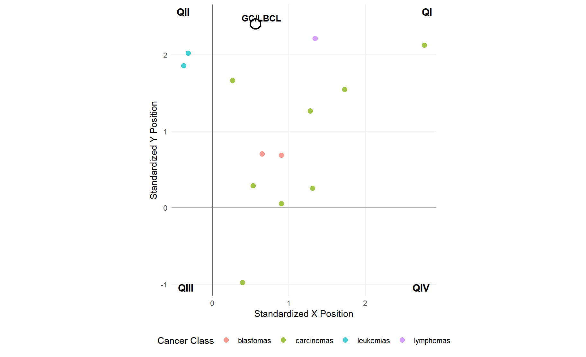
18.0.8 Assignment stability map
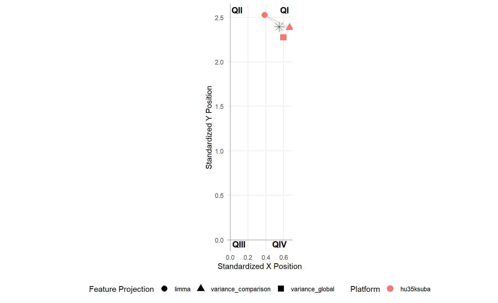
| Platform | Feature Projection | Perturbational State | Structural Interpretation | Assignment Confidence | X Descriptor | Y Descriptor | Std. X Position | Std. Y Position | Boundary Margin | Directional Agreement |
|---|---|---|---|---|---|---|---|---|---|---|
| hu35ksuba | limma | QI | coordinated structural expansion | low | complexity__effrank_delta | mp__spectral_entropy_delta | 0.385 | 2.526 | 0.385 | 100.0% |
| hu35ksuba | variance_comparison | QI | coordinated structural expansion | moderate | complexity__effrank_delta | mp__spectral_entropy_delta | 0.665 | 2.385 | 0.665 | 100.0% |
| hu35ksuba | variance_global | QI | coordinated structural expansion | moderate | complexity__effrank_delta | mp__spectral_entropy_delta | 0.595 | 2.276 | 0.595 | 100.0% |
| Comparison | Assignments | Platforms | Feature Projections | Observed Quadrants | Modal Perturbational State | Modal Stability | Fully Stable | High-Confidence Share | Median Boundary Margin | Stability Class |
|---|---|---|---|---|---|---|---|---|---|---|
| GC/LBCL | 3 | 1 | 3 | 1 | QI | 100.0% | Yes | 0.0% | 0.595 | stable among available assignments |
Reading guide. QI, QII, QIII, and QIV denote perturbational states in the standardized structural coordinate system. Std. X and Std. Y are report-level structural coordinates, not sample-level PCA axes. Boundary margin is the standardized distance from the nearest quadrant boundary; larger values indicate assignments farther from sign-transition boundaries. Directional agreement is the fraction of contributing structural engines supporting the same directional sign pattern. Modal stability is the fraction of platform/filter assignments occupying the dominant perturbational state.
18.0.9 Cross-engine directional concordance
| Metric | hu35ksuba limma |
hu35ksuba var-comp |
hu35ksuba var-global |
|---|---|---|---|
| Complexity Direction | positive | positive | positive |
| Entropy Direction | positive | positive | positive |
| MP Direction | positive | positive | positive |
| Latent Direction | NA | NA | NA |
| Metrics Available | 3 | 3 | 3 |
| Positive Metrics | 3 | 3 | 3 |
| Negative Metrics | 0 | 0 | 0 |
| Majority Direction | positive | positive | positive |
| Agreement Fraction | 1 | 1 | 1 |
18.0.10 Cross-engine discordance archetypes
| Metric | hu35ksuba limma |
hu35ksuba var-comp |
hu35ksuba var-global |
|---|---|---|---|
| Complexity Direction | positive | positive | positive |
| Entropy Direction | positive | positive | positive |
| MP Direction | positive | positive | positive |
| Latent Direction | NA | NA | NA |
| Modal Direction | positive | positive | positive |
| Agreement Fraction | 1 | 1 | 1 |
| Discordance Class | full_agreement | full_agreement | full_agreement |
| Engine Coverage | three_engine_core_latent_unavailable | three_engine_core_latent_unavailable | three_engine_core_latent_unavailable |
| Discordance Archetype | full_three_engine_core_agreement_latent_unavailable | full_three_engine_core_agreement_latent_unavailable | full_three_engine_core_agreement_latent_unavailable |
| comparison | n_assignments | modal_quadrant | modal_quadrant_fraction | mean_quadrant_margin | median_quadrant_margin | min_quadrant_margin | chip_instability_fraction | filter_instability_fraction | x_sign_flips | y_sign_flips | both_axis_flips | total_boundary_crossings | robustness_class | structural_confidence |
|---|---|---|---|---|---|---|---|---|---|---|---|---|---|---|
| GC/LBCL | 3 | QI | 1 | 0.297 | 0.229 | 0.229 | 0 | 0 | 0 | 0 | 0 | 0 | stable_boundary_archetype | moderate |
| Metric | hu35ksuba limma |
hu35ksuba var-comp |
hu35ksuba var-global |
|---|---|---|---|
| Robustness Quadrant | QI | QI | QI |
| X-Axis Robustness | 0.433 | 0.229 | 0.229 |
| Y-Axis Robustness | 0.941 | 1.087 | 1.087 |
| Distance to X-Axis | 0.941 | 1.087 | 1.087 |
| Distance to Y-Axis | 0.433 | 0.229 | 0.229 |
| Distance to Origin | 1.036 | 1.111 | 1.111 |
| Quadrant Margin | 0.433 | 0.229 | 0.229 |
| X Sign | + | + | + |
| Y Sign | + | + | + |
18.0.11 GC/LBCL: GO Semantic Metadata
The GO semantic layer summarizes functional annotation landscapes projected onto transcriptomic structural geometry. These tables group GO BP and GO MF terms into semantic blocks; they should be read as annotation topology, not as direct mechanistic inference.
18.0.11.1 GO semantic coverage
| gene_set_mode | n_context_rows | n_semantic_blocks | n_terms | n_sig_complexity | n_sig_entropy_spectral | median_shared_probes |
|---|---|---|---|---|---|---|
| GO_BP | 1102 | 290 | 1517 | 77 | 189 | 8.000 |
| GO_MF | 417 | 43 | 568 | 18 | 74 | 10.000 |
18.0.11.2 GO semantic panels
Semantic context summary
| n_semantic_blocks | n_terms | n_sig_complexity | n_sig_entropy_spectral | median_shared_probes |
|---|---|---|---|---|
| 197 | 450 | 28 | 89 | 7.000 |
18.0.11.2.1 Dominant GO semantic blocks
| semantic_block_name | n_terms | n_sig_complexity | n_sig_entropy_spectral | total_sig | mean_shared_probes |
|---|---|---|---|---|---|
| mRNA catabolic process | 4 | 3 | 1 | 4 | 5.500 |
| monoatomic cation transmembrane transport | 3 | 1 | 1 | 2 | 7.000 |
| apoptotic process | 2 | 1 | 1 | 2 | 30.000 |
| biological process involved in interspecies interaction between organisms | 1 | 1 | 1 | 2 | 7.000 |
| biological_process | 1 | 1 | 1 | 2 | 6.000 |
| leukocyte cell-cell adhesion | 1 | 1 | 1 | 2 | 6.000 |
| lymphocyte differentiation | 1 | 1 | 1 | 2 | 5.000 |
| macroautophagy | 1 | 1 | 1 | 2 | 12.000 |
| positive regulation of cell population proliferation | 1 | 1 | 1 | 2 | 6.000 |
| positive regulation of cytokine production | 1 | 1 | 1 | 2 | 6.000 |
| positive regulation of multicellular organismal process | 1 | 1 | 1 | 2 | 5.000 |
| response to other organism | 1 | 1 | 1 | 2 | 25.000 |
| response to oxygen-containing compound | 1 | 1 | 1 | 2 | 6.000 |
| cell surface receptor signaling pathway | 6 | 0 | 2 | 2 | 10.000 |
| defense response | 2 | 0 | 2 | 2 | 7.500 |
| negative regulation of intracellular signal transduction | 2 | 0 | 2 | 2 | 12.000 |
| negative regulation of intracellular signal transduction | 2 | 0 | 2 | 2 | 12.500 |
| organelle fission | 2 | 0 | 2 | 2 | 6.000 |
| response to other organism | 2 | 0 | 2 | 2 | 6.500 |
| regulation of cellular response to stress | 5 | 1 | 0 | 1 | 7.400 |
Semantic context summary
| n_semantic_blocks | n_terms | n_sig_complexity | n_sig_entropy_spectral | median_shared_probes |
|---|---|---|---|---|
| 38 | 178 | 7 | 37 | 11.000 |
18.0.11.2.2 Dominant GO semantic blocks
| semantic_block_name | n_terms | n_sig_complexity | n_sig_entropy_spectral | total_sig | mean_shared_probes |
|---|---|---|---|---|---|
| peptidase activity | 4 | 0 | 3 | 3 | 18.000 |
| phosphoric ester hydrolase activity | 3 | 0 | 3 | 3 | 11.333 |
| DNA binding | 1 | 1 | 1 | 2 | 11.000 |
| peptidase activity | 1 | 1 | 1 | 2 | 5.000 |
| protein binding | 1 | 1 | 1 | 2 | 7.000 |
| protein binding | 2 | 0 | 2 | 2 | 92.000 |
| RNA binding | 4 | 1 | 0 | 1 | 47.250 |
| RNA binding | 2 | 1 | 0 | 1 | 6.000 |
| protein-containing complex binding | 2 | 1 | 0 | 1 | 13.500 |
| enzyme regulator activity | 1 | 1 | 0 | 1 | 6.000 |
| cytoskeletal protein binding | 3 | 0 | 1 | 1 | 5.667 |
| DNA binding | 2 | 0 | 1 | 1 | 22.500 |
| RNA binding | 2 | 0 | 1 | 1 | 12.000 |
| binding | 2 | 0 | 1 | 1 | 27.500 |
| enzyme binding | 2 | 0 | 1 | 1 | 16.000 |
| enzyme binding | 2 | 0 | 1 | 1 | 26.500 |
| molecular_function | 2 | 0 | 1 | 1 | 53.500 |
| protein binding | 2 | 0 | 1 | 1 | 16.000 |
| transcription factor binding | 2 | 0 | 1 | 1 | 7.000 |
| DNA binding | 1 | 0 | 1 | 1 | 21.000 |
Semantic context summary
| n_semantic_blocks | n_terms | n_sig_complexity | n_sig_entropy_spectral | median_shared_probes |
|---|---|---|---|---|
| 289 | 1067 | 49 | 100 | 8.000 |
18.0.11.2.3 Dominant GO semantic blocks
| semantic_block_name | n_terms | n_sig_complexity | n_sig_entropy_spectral | total_sig | mean_shared_probes |
|---|---|---|---|---|---|
| cell surface receptor signaling pathway | 7 | 1 | 2 | 3 | 15.429 |
| cytokine-mediated signaling pathway | 2 | 1 | 2 | 3 | 6.500 |
| intracellular signal transduction | 5 | 2 | 0 | 2 | 12.400 |
| positive regulation of cytokine production | 6 | 1 | 1 | 2 | 9.667 |
| positive regulation of protein metabolic process | 3 | 1 | 1 | 2 | 12.333 |
| protein localization to organelle | 2 | 1 | 1 | 2 | 6.000 |
| biological_process | 1 | 1 | 1 | 2 | 6.000 |
| positive regulation of multicellular organismal process | 1 | 1 | 1 | 2 | 5.000 |
| protein localization to organelle | 1 | 1 | 1 | 2 | 7.000 |
| protein modification by small protein conjugation or removal | 1 | 1 | 1 | 2 | 6.000 |
| regulation of protein modification process | 1 | 1 | 1 | 2 | 5.000 |
| regulation of vesicle-mediated transport | 1 | 1 | 1 | 2 | 8.000 |
| reproductive process | 1 | 1 | 1 | 2 | 6.000 |
| negative regulation of intracellular signal transduction | 7 | 0 | 2 | 2 | 11.143 |
| biological process involved in interspecies interaction between organisms | 2 | 0 | 2 | 2 | 5.500 |
| defense response | 2 | 0 | 2 | 2 | 13.500 |
| negative regulation of intracellular signal transduction | 2 | 0 | 2 | 2 | 16.500 |
| response to lipid | 2 | 0 | 2 | 2 | 5.000 |
| positive regulation of RNA metabolic process | 7 | 1 | 0 | 1 | 63.429 |
| regulation of intracellular signal transduction | 6 | 1 | 0 | 1 | 8.500 |
Semantic context summary
| n_semantic_blocks | n_terms | n_sig_complexity | n_sig_entropy_spectral | median_shared_probes |
|---|---|---|---|---|
| 43 | 390 | 11 | 37 | 9.000 |
18.0.11.2.4 Dominant GO semantic blocks
| semantic_block_name | n_terms | n_sig_complexity | n_sig_entropy_spectral | total_sig | mean_shared_probes |
|---|---|---|---|---|---|
| DNA binding | 4 | 1 | 1 | 2 | 34.000 |
| acyltransferase activity | 3 | 1 | 1 | 2 | 10.000 |
| enzyme binding | 1 | 1 | 1 | 2 | 8.000 |
| enzyme regulator activity | 1 | 1 | 1 | 2 | 5.000 |
| enzyme regulator activity | 4 | 0 | 2 | 2 | 6.000 |
| peptidase activity | 4 | 0 | 2 | 2 | 27.250 |
| lipid binding | 2 | 1 | 0 | 1 | 5.000 |
| RNA binding | 1 | 1 | 0 | 1 | 8.000 |
| active transmembrane transporter activity | 1 | 1 | 0 | 1 | 5.000 |
| catalytic activity | 1 | 1 | 0 | 1 | 8.000 |
| protein binding | 1 | 1 | 0 | 1 | 13.000 |
| protein-containing complex binding | 1 | 1 | 0 | 1 | 5.000 |
| transporter activity | 1 | 1 | 0 | 1 | 8.000 |
| molecular function regulator activity | 4 | 0 | 1 | 1 | 14.250 |
| RNA binding | 3 | 0 | 1 | 1 | 9.333 |
| protein binding | 3 | 0 | 1 | 1 | 24.000 |
| protein-macromolecule adaptor activity | 3 | 0 | 1 | 1 | 53.667 |
| transcription factor binding | 3 | 0 | 1 | 1 | 12.000 |
| binding | 2 | 0 | 1 | 1 | 65.500 |
| catalytic activity | 2 | 0 | 1 | 1 | 17.500 |
This section embeds the biological structural-overlay module. Chips are treated as distinct observational systems, and filter regimes are treated as feature-space perturbations rather than pooled preprocessing settings.
18.0.12 GC/LBCL: Biological Gene-Set Structural Report
This report is exploratory and downstream of the structural-inference framework. It summarizes GO, KEGG, and MSigDB/Hallmark gene-set results associated with a single normal–tumor comparison. Biological terms are interpreted as annotations of structurally characterized tumor states, not as the primary evidentiary basis of the framework.
18.0.12.1 Report coverage
| comparison | alpha | enabled_gene_set_modes | n_biological_rows | n_skipped_chip_mode_gene_sets |
|---|---|---|---|---|
| GC/LBCL | 0.05 | GO_BP, GO_MF, KEGG, MSIGDB | 4384 | 7996 |
18.0.12.2 Context inventory
| comparison | chip | filter_regime | gene_set_mode | engine | n_terms | n_gene_sets | n_significant_complexity | n_significant_entropy_spectral | median_shared_probes |
|---|---|---|---|---|---|---|---|---|---|
| GC/LBCL | hu35ksuba | limma | GO_BP | complexity | 450 | 450 | 28 | 0 | 7.0 |
| GC/LBCL | hu35ksuba | limma | GO_BP | entropy | 450 | 450 | 0 | 89 | 7.0 |
| GC/LBCL | hu35ksuba | limma | GO_MF | complexity | 178 | 178 | 7 | 0 | 10.0 |
| GC/LBCL | hu35ksuba | limma | GO_MF | entropy | 178 | 178 | 0 | 37 | 10.0 |
| GC/LBCL | hu35ksuba | limma | KEGG | complexity | 29 | 29 | 1 | 0 | 14.0 |
| GC/LBCL | hu35ksuba | limma | KEGG | entropy | 29 | 29 | 0 | 4 | 14.0 |
| GC/LBCL | hu35ksuba | limma | MSIGDB | complexity | 12 | 12 | 0 | 0 | 21.5 |
| GC/LBCL | hu35ksuba | limma | MSIGDB | entropy | 12 | 12 | 0 | 1 | 21.5 |
| GC/LBCL | hu35ksuba | variance_top3000 | GO_BP | complexity | 1067 | 1067 | 49 | 0 | 8.0 |
| GC/LBCL | hu35ksuba | variance_top3000 | GO_BP | entropy | 1067 | 1067 | 0 | 100 | 8.0 |
| GC/LBCL | hu35ksuba | variance_top3000 | GO_MF | complexity | 390 | 390 | 11 | 0 | 9.0 |
| GC/LBCL | hu35ksuba | variance_top3000 | GO_MF | entropy | 390 | 390 | 0 | 37 | 9.0 |
| GC/LBCL | hu35ksuba | variance_top3000 | KEGG | complexity | 53 | 53 | 0 | 0 | 22.0 |
| GC/LBCL | hu35ksuba | variance_top3000 | KEGG | entropy | 53 | 53 | 0 | 5 | 22.0 |
| GC/LBCL | hu35ksuba | variance_top3000 | MSIGDB | complexity | 13 | 13 | 0 | 0 | 48.0 |
| GC/LBCL | hu35ksuba | variance_top3000 | MSIGDB | entropy | 13 | 13 | 0 | 0 | 48.0 |
18.0.12.3 Biological result panels
The panels below intentionally separate chips and filtering regimes. Chips are treated as distinct observational systems, and filter regimes are treated as feature-space perturbations rather than interchangeable preprocessing settings.
Context summary
| engine | n_rows | n_gene_sets | n_significant_complexity | n_significant_entropy_spectral | median_shared_probes |
|---|---|---|---|---|---|
| complexity | 450 | 450 | 28 | 0 | 7.000 |
| entropy | 450 | 450 | 0 | 89 | 7.000 |
18.0.12.3.1 Complexity signal plot
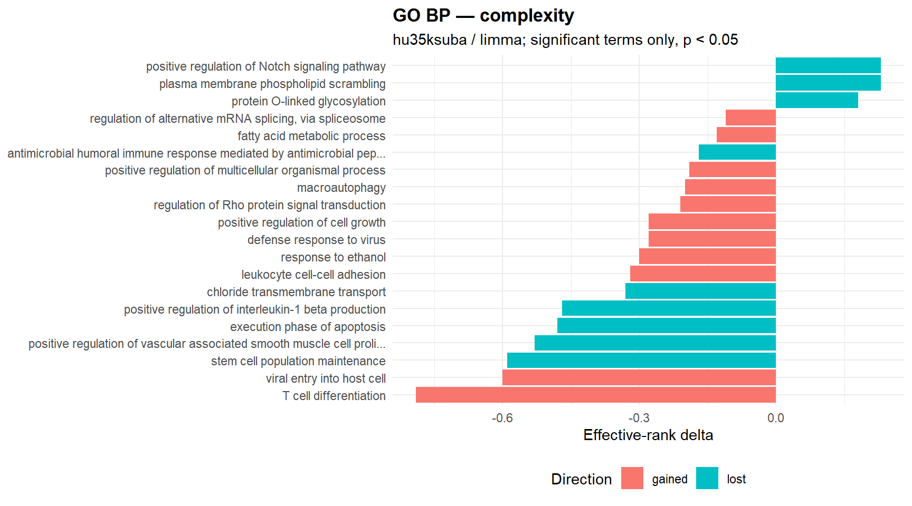
18.0.12.3.2 Entropy signal plot
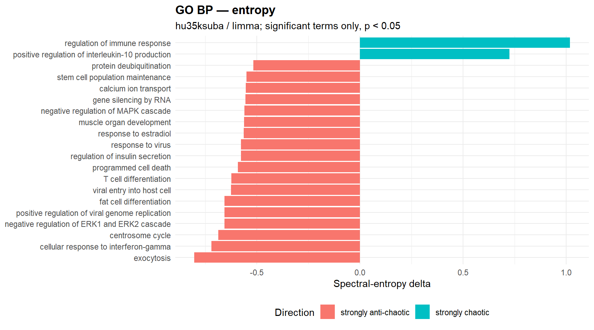
18.0.12.3.3 Significant complexity terms
| gene_set | semantic_block | n_shared_probes | effrank Δ | kappa Δ | direction | p_perm | status |
|---|---|---|---|---|---|---|---|
| positive regulation of vascular associated smooth muscle cell proliferation | positive regulation of cell population proliferation | 6 | -0.530 | -1287.960 | lost | <0.001 | ok |
| macroautophagy | macroautophagy | 12 | -0.200 | 676.420 | gained | <0.001 | ok |
| fatty acid metabolic process | fatty acid metabolic process | 10 | -0.130 | 7007.260 | gained | <0.001 | ok |
| RNA processing | RNA processing | 18 | -0.070 | 350.840 | gained | <0.001 | ok |
| CRD-mediated mRNA stabilization | mRNA catabolic process | 5 | -0.020 | -402.720 | lost | <0.001 | ok |
| negative regulation of nuclear-transcribed mRNA catabolic process, deadenylation-dependent decay | mRNA catabolic process | 5 | -0.020 | -402.720 | lost | <0.001 | ok |
| positive regulation of cytoplasmic translation | positive regulation of protein metabolic process | 5 | -0.020 | -402.720 | lost | <0.001 | ok |
| carbohydrate metabolic process | carbohydrate metabolic process | 10 | -0.010 | 14198.110 | gained | <0.001 | ok |
| T cell differentiation | lymphocyte differentiation | 5 | -0.790 | 322.310 | gained | 0.010 | ok |
| stem cell population maintenance | biological_process | 6 | -0.590 | -424.110 | lost | 0.010 | ok |
| chloride transmembrane transport | monoatomic ion transmembrane transport | 7 | -0.330 | -1786.110 | lost | 0.010 | ok |
| response to ethanol | response to oxygen-containing compound | 6 | -0.300 | 1104.220 | gained | 0.010 | ok |
| positive regulation of cell growth | growth | 6 | -0.280 | 1134.750 | gained | 0.010 | ok |
| positive regulation of multicellular organismal process | positive regulation of multicellular organismal process | 5 | -0.190 | 270.280 | gained | 0.010 | ok |
| negative regulation of nuclear-transcribed mRNA catabolic process, nonsense-mediated decay | mRNA catabolic process | 5 | 0.060 | -326.090 | lost | 0.010 | ok |
| positive regulation of double-strand break repair via homologous recombination | regulation of cellular response to stress | 7 | 0.030 | -2524.310 | lost | 0.010 | ok |
| viral entry into host cell | biological process involved in interspecies interaction between organisms | 7 | -0.600 | 6843.740 | gained | 0.020 | ok |
| positive regulation of interleukin-1 beta production | positive regulation of cytokine production | 6 | -0.470 | -582.560 | lost | 0.020 | ok |
| leukocyte cell-cell adhesion | leukocyte cell-cell adhesion | 6 | -0.320 | 2578.430 | gained | 0.020 | ok |
| defense response to virus | response to other organism | 25 | -0.280 | 158.850 | gained | 0.020 | ok |
18.0.12.3.4 Significant entropy terms
| gene_set | semantic_block | n_shared_probes | spectral Δ | shannon Δ | spectral_direction | p_perm_spectral | p_perm_shannon | status |
|---|---|---|---|---|---|---|---|---|
| regulation of immune response | regulation of immune response | 5 | 1.018 | 0.174 | strongly chaotic | <0.001 | NA | ok |
| exocytosis | secretion by cell | 7 | -0.803 | 0.169 | strongly anti-chaotic | <0.001 | NA | ok |
| centrosome cycle | microtubule cytoskeleton organization | 5 | -0.686 | 0.170 | strongly anti-chaotic | <0.001 | NA | ok |
| positive regulation of viral genome replication | biological_process | 5 | -0.657 | 0.172 | strongly anti-chaotic | <0.001 | NA | ok |
| fat cell differentiation | cell differentiation | 8 | -0.656 | 0.161 | strongly anti-chaotic | <0.001 | NA | ok |
| regulation of insulin secretion | signal release | 5 | -0.577 | 0.165 | strongly anti-chaotic | <0.001 | NA | ok |
| gene silencing by RNA | negative regulation of gene expression | 8 | -0.555 | 0.168 | strongly anti-chaotic | <0.001 | NA | ok |
| stem cell population maintenance | biological_process | 6 | -0.550 | 0.168 | strongly anti-chaotic | <0.001 | NA | ok |
| mitotic sister chromatid segregation | organelle fission | 5 | -0.454 | 0.174 | mildly anti-chaotic | <0.001 | NA | ok |
| positive regulation of T cell proliferation | positive regulation of cell-cell adhesion | 5 | -0.416 | 0.176 | mildly anti-chaotic | <0.001 | NA | ok |
| cellular defense response | defense response | 6 | -0.368 | 0.178 | mildly anti-chaotic | <0.001 | NA | ok |
| ERAD pathway | protein catabolic process | 8 | -0.360 | 0.169 | mildly anti-chaotic | <0.001 | NA | ok |
| defense response | defense response | 9 | -0.351 | 0.172 | mildly anti-chaotic | <0.001 | NA | ok |
| positive regulation of endothelial cell migration | positive regulation of cell migration | 6 | 0.340 | 0.184 | mildly chaotic | <0.001 | NA | ok |
| response to ethanol | response to oxygen-containing compound | 6 | -0.334 | 0.171 | mildly anti-chaotic | <0.001 | NA | ok |
| G protein-coupled receptor signaling pathway | G protein-coupled receptor signaling pathway | 28 | -0.309 | 0.175 | mildly anti-chaotic | <0.001 | NA | ok |
| leukocyte cell-cell adhesion | leukocyte cell-cell adhesion | 6 | -0.306 | 0.176 | mildly anti-chaotic | <0.001 | NA | ok |
| circadian rhythm | biological_process | 7 | -0.231 | 0.167 | mildly anti-chaotic | <0.001 | NA | ok |
| DNA damage checkpoint signaling | cell cycle phase transition | 6 | -0.217 | 0.173 | mildly anti-chaotic | <0.001 | NA | ok |
| semaphorin-plexin signaling pathway | cell surface receptor signaling pathway | 7 | -0.214 | 0.182 | mildly anti-chaotic | <0.001 | NA | ok |
18.0.12.3.5 Terms significant in both engines
| gene_set | semantic_block | n_shared_probes | complexity_effrank Δ | complexity_direction | complexity_p_perm | entropy_spectral Δ | entropy_spectral_direction | entropy_p_perm_spectral | joint_rank_score |
|---|---|---|---|---|---|---|---|---|---|
| stem cell population maintenance | biological_process | 6 | -0.590 | lost | 0.010 | -0.550 | strongly anti-chaotic | <0.001 | 309.653 |
| response to ethanol | response to oxygen-containing compound | 6 | -0.300 | gained | 0.010 | -0.334 | mildly anti-chaotic | <0.001 | 309.653 |
| leukocyte cell-cell adhesion | leukocyte cell-cell adhesion | 6 | -0.320 | gained | 0.020 | -0.306 | mildly anti-chaotic | <0.001 | 309.352 |
| positive regulation of vascular associated smooth muscle cell proliferation | positive regulation of cell population proliferation | 6 | -0.530 | lost | <0.001 | -0.468 | mildly anti-chaotic | 0.030 | 309.176 |
| macroautophagy | macroautophagy | 12 | -0.200 | gained | <0.001 | -0.234 | mildly anti-chaotic | 0.040 | 309.051 |
| positive regulation of multicellular organismal process | positive regulation of multicellular organismal process | 5 | -0.190 | gained | 0.010 | -0.236 | mildly anti-chaotic | 0.010 | 4.000 |
| positive regulation of interleukin-1 beta production | positive regulation of cytokine production | 6 | -0.470 | lost | 0.020 | -0.439 | mildly anti-chaotic | 0.010 | 3.699 |
| viral entry into host cell | biological process involved in interspecies interaction between organisms | 7 | -0.600 | gained | 0.020 | -0.625 | strongly anti-chaotic | 0.010 | 3.699 |
| T cell differentiation | lymphocyte differentiation | 5 | -0.790 | gained | 0.010 | -0.623 | strongly anti-chaotic | 0.030 | 3.523 |
| defense response to virus | response to other organism | 25 | -0.280 | gained | 0.020 | -0.292 | mildly anti-chaotic | 0.020 | 3.398 |
| execution phase of apoptosis | apoptotic process | 5 | -0.480 | lost | 0.030 | -0.458 | mildly anti-chaotic | 0.030 | 3.046 |
18.0.12.3.6 GO semantic clusters
| semantic_cluster_id | semantic_block_name | n_rows | n_terms | n_sig_complexity | n_sig_entropy_spectral | mean_shared_probes |
|---|---|---|---|---|---|---|
| BP_GO_0006402_3 | mRNA catabolic process | 8 | 4 | 3 | 1 | 5.500 |
| BP_GO_0007166_1 | cell surface receptor signaling pathway | 12 | 6 | 0 | 2 | 10.000 |
| BP_GO_0098655_3 | monoatomic cation transmembrane transport | 6 | 3 | 1 | 1 | 7.000 |
| BP_GO_0006915_1 | apoptotic process | 4 | 2 | 1 | 1 | 30.000 |
| BP_GO_0006952_1 | defense response | 4 | 2 | 0 | 2 | 7.500 |
| BP_GO_0048285_1 | organelle fission | 4 | 2 | 0 | 2 | 6.000 |
| BP_GO_0051707_3 | response to other organism | 4 | 2 | 0 | 2 | 6.500 |
| BP_GO_1902532_1 | negative regulation of intracellular signal transduction | 4 | 2 | 0 | 2 | 12.000 |
| BP_GO_1902532_3 | negative regulation of intracellular signal transduction | 4 | 2 | 0 | 2 | 12.500 |
| BP_GO_0001819_4 | positive regulation of cytokine production | 2 | 1 | 1 | 1 | 6.000 |
| BP_GO_0007159_1 | leukocyte cell-cell adhesion | 2 | 1 | 1 | 1 | 6.000 |
| BP_GO_0008284_5 | positive regulation of cell population proliferation | 2 | 1 | 1 | 1 | 6.000 |
| BP_GO_0016236_3 | macroautophagy | 2 | 1 | 1 | 1 | 12.000 |
| BP_GO_0030098_3 | lymphocyte differentiation | 2 | 1 | 1 | 1 | 5.000 |
| BP_GO_0044419_7 | biological process involved in interspecies interaction between organisms | 2 | 1 | 1 | 1 | 7.000 |
| BP_GO_0051240_2 | positive regulation of multicellular organismal process | 2 | 1 | 1 | 1 | 5.000 |
| BP_GO_0051707_8 | response to other organism | 2 | 1 | 1 | 1 | 25.000 |
| BP_GO_1901700_7 | response to oxygen-containing compound | 2 | 1 | 1 | 1 | 6.000 |
| BP_biological_process_26 | biological_process | 2 | 1 | 1 | 1 | 6.000 |
| BP_GO_1902533_1 | positive regulation of intracellular signal transduction | 12 | 6 | 0 | 1 | 9.500 |
Context summary
| engine | n_rows | n_gene_sets | n_significant_complexity | n_significant_entropy_spectral | median_shared_probes |
|---|---|---|---|---|---|
| complexity | 178 | 178 | 7 | 0 | 10.000 |
| entropy | 178 | 178 | 0 | 37 | 10.000 |
18.0.12.3.7 Complexity signal plot
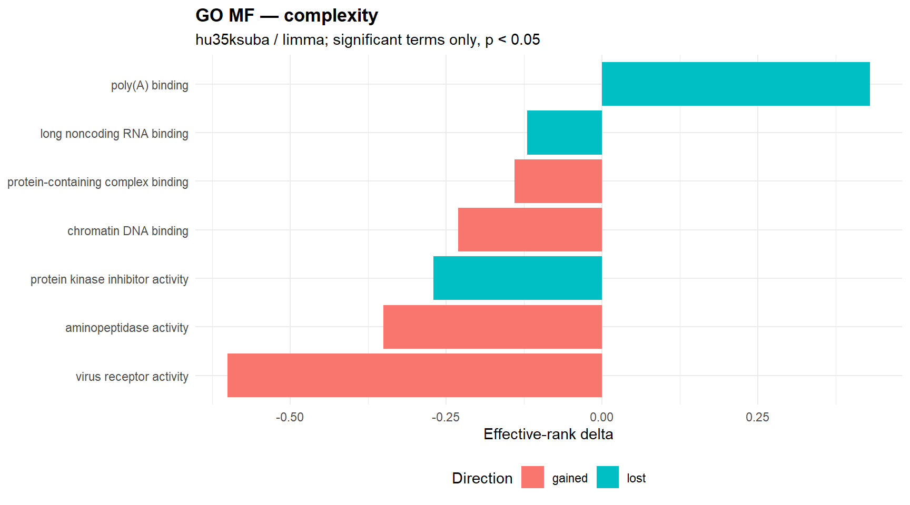
18.0.12.3.8 Entropy signal plot
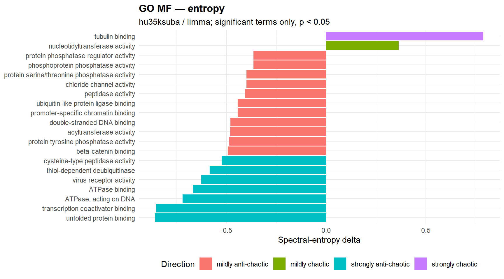
18.0.12.3.9 Significant complexity terms
| gene_set | semantic_block | n_shared_probes | effrank Δ | kappa Δ | direction | p_perm | status |
|---|---|---|---|---|---|---|---|
| long noncoding RNA binding | RNA binding | 6 | -0.120 | -573.180 | lost | 0.010 | ok |
| virus receptor activity | protein binding | 7 | -0.600 | 6843.740 | gained | 0.020 | ok |
| aminopeptidase activity | peptidase activity | 5 | -0.350 | 290.300 | gained | 0.020 | ok |
| protein-containing complex binding | protein-containing complex binding | 21 | -0.140 | 239.450 | gained | 0.020 | ok |
| poly(A) binding | RNA binding | 6 | 0.430 | -704.670 | lost | 0.030 | ok |
| protein kinase inhibitor activity | enzyme regulator activity | 6 | -0.270 | -430.710 | lost | 0.040 | ok |
| chromatin DNA binding | DNA binding | 11 | -0.230 | 1315.670 | gained | 0.040 | ok |
18.0.12.3.10 Significant entropy terms
| gene_set | semantic_block | n_shared_probes | spectral Δ | shannon Δ | spectral_direction | p_perm_spectral | p_perm_shannon | status |
|---|---|---|---|---|---|---|---|---|
| unfolded protein binding | protein binding | 5 | -0.855 | 0.172 | strongly anti-chaotic | <0.001 | NA | ok |
| tubulin binding | cytoskeletal protein binding | 6 | 0.787 | 0.173 | strongly chaotic | <0.001 | NA | ok |
| ATPase, acting on DNA | catalytic activity | 5 | -0.719 | 0.171 | strongly anti-chaotic | <0.001 | NA | ok |
| thiol-dependent deubiquitinase | peptidase activity | 7 | -0.583 | 0.171 | strongly anti-chaotic | <0.001 | NA | ok |
| cysteine-type peptidase activity | peptidase activity | 13 | -0.523 | 0.168 | strongly anti-chaotic | <0.001 | NA | ok |
| cysteine-type endopeptidase activity | peptidase activity | 10 | -0.360 | 0.168 | mildly anti-chaotic | <0.001 | NA | ok |
| signaling receptor binding | signaling receptor binding | 24 | -0.185 | 0.175 | mildly anti-chaotic | <0.001 | NA | ok |
| virus receptor activity | protein binding | 7 | -0.625 | 0.166 | strongly anti-chaotic | 0.010 | NA | ok |
| beta-catenin binding | protein binding | 6 | -0.492 | 0.165 | mildly anti-chaotic | 0.010 | NA | ok |
| promoter-specific chromatin binding | binding | 8 | -0.443 | 0.166 | mildly anti-chaotic | 0.010 | NA | ok |
| protein serine/threonine phosphatase activity | phosphoric ester hydrolase activity | 10 | -0.398 | 0.160 | mildly anti-chaotic | 0.010 | NA | ok |
| nucleotidyltransferase activity | transferase activity, transferring phosphorus-containing groups | 8 | 0.364 | 0.176 | mildly chaotic | 0.010 | NA | ok |
| protein phosphatase regulator activity | enzyme regulator activity | 6 | -0.364 | 0.163 | mildly anti-chaotic | 0.010 | NA | ok |
| RNA polymerase II transcription regulatory region sequence-specific DNA binding | DNA binding | 19 | -0.306 | 0.170 | mildly anti-chaotic | 0.010 | NA | ok |
| histone deacetylase binding | enzyme binding | 9 | -0.273 | 0.168 | mildly anti-chaotic | 0.010 | NA | ok |
| chromatin DNA binding | DNA binding | 11 | -0.255 | 0.165 | mildly anti-chaotic | 0.010 | NA | ok |
| transcription coactivator binding | transcription factor binding | 5 | -0.852 | 0.164 | strongly anti-chaotic | 0.020 | NA | ok |
| protein tyrosine phosphatase activity | phosphoric ester hydrolase activity | 9 | -0.485 | 0.170 | mildly anti-chaotic | 0.020 | NA | ok |
| ubiquitin-like protein ligase binding | enzyme binding | 8 | -0.442 | 0.169 | mildly anti-chaotic | 0.020 | NA | ok |
| peptidase activity | peptidase activity | 38 | -0.406 | 0.171 | mildly anti-chaotic | 0.020 | NA | ok |
18.0.12.3.11 Terms significant in both engines
| gene_set | semantic_block | n_shared_probes | complexity_effrank Δ | complexity_direction | complexity_p_perm | entropy_spectral Δ | entropy_spectral_direction | entropy_p_perm_spectral | joint_rank_score |
|---|---|---|---|---|---|---|---|---|---|
| virus receptor activity | protein binding | 7 | -0.600 | gained | 0.020 | -0.625 | strongly anti-chaotic | 0.010 | 3.699 |
| chromatin DNA binding | DNA binding | 11 | -0.230 | gained | 0.040 | -0.255 | mildly anti-chaotic | 0.010 | 3.398 |
| aminopeptidase activity | peptidase activity | 5 | -0.350 | gained | 0.020 | -0.359 | mildly anti-chaotic | 0.030 | 3.222 |
18.0.12.3.12 GO semantic clusters
| semantic_cluster_id | semantic_block_name | n_rows | n_terms | n_sig_complexity | n_sig_entropy_spectral | mean_shared_probes |
|---|---|---|---|---|---|---|
| MF_GO_0008233_1 | peptidase activity | 8 | 4 | 0 | 3 | 18.000 |
| MF_GO_0042578_7 | phosphoric ester hydrolase activity | 6 | 3 | 0 | 3 | 11.333 |
| MF_GO_0005515_44 | protein binding | 4 | 2 | 0 | 2 | 92.000 |
| MF_GO_0003677_10 | DNA binding | 2 | 1 | 1 | 1 | 11.000 |
| MF_GO_0005515_2 | protein binding | 2 | 1 | 1 | 1 | 7.000 |
| MF_GO_0008233_3 | peptidase activity | 2 | 1 | 1 | 1 | 5.000 |
| MF_GO_0003723_1 | RNA binding | 8 | 4 | 1 | 0 | 47.250 |
| MF_GO_0008092_4 | cytoskeletal protein binding | 6 | 3 | 0 | 1 | 5.667 |
| MF_GO_0003677_3 | DNA binding | 4 | 2 | 0 | 1 | 22.500 |
| MF_GO_0003723_3 | RNA binding | 4 | 2 | 1 | 0 | 6.000 |
| MF_GO_0003723_5 | RNA binding | 4 | 2 | 0 | 1 | 12.000 |
| MF_GO_0005488_2 | binding | 4 | 2 | 0 | 1 | 27.500 |
| MF_GO_0005515_61 | protein binding | 4 | 2 | 0 | 1 | 16.000 |
| MF_GO_0008134_2 | transcription factor binding | 4 | 2 | 0 | 1 | 7.000 |
| MF_GO_0019899_3 | enzyme binding | 4 | 2 | 0 | 1 | 26.500 |
| MF_GO_0019899_8 | enzyme binding | 4 | 2 | 0 | 1 | 16.000 |
| MF_GO_0044877_5 | protein-containing complex binding | 4 | 2 | 1 | 0 | 13.500 |
| MF_molecular_function_2 | molecular_function | 4 | 2 | 0 | 1 | 53.500 |
| MF_GO_0003677_8 | DNA binding | 2 | 1 | 0 | 1 | 21.000 |
| MF_GO_0003824_17 | catalytic activity | 2 | 1 | 0 | 1 | 5.000 |
Context summary
| engine | n_rows | n_gene_sets | n_significant_complexity | n_significant_entropy_spectral | median_shared_probes |
|---|---|---|---|---|---|
| complexity | 29 | 29 | 1 | 0 | 14.000 |
| entropy | 29 | 29 | 0 | 4 | 14.000 |
18.0.12.3.13 Complexity signal plot
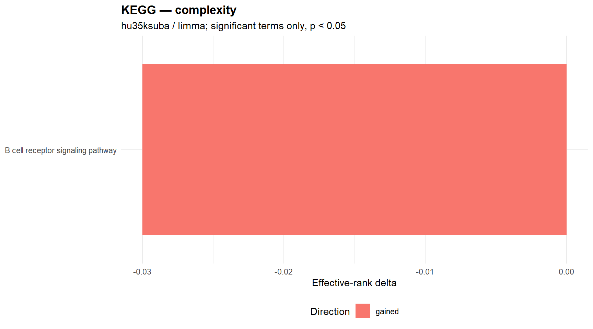
18.0.12.3.14 Entropy signal plot
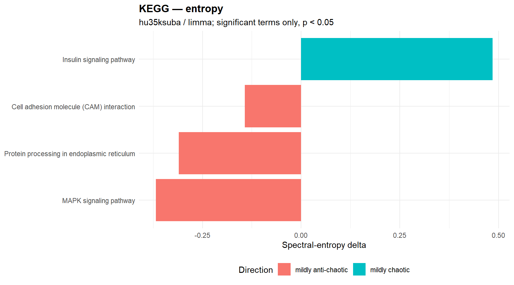
18.0.12.3.15 Significant complexity terms
| gene_set | semantic_block | n_shared_probes | effrank Δ | kappa Δ | direction | p_perm | status |
|---|---|---|---|---|---|---|---|
| B cell receptor signaling pathway | NA | 12 | -0.030 | 963.080 | gained | 0.020 | ok |
18.0.12.3.16 Significant entropy terms
| gene_set | semantic_block | n_shared_probes | spectral Δ | shannon Δ | spectral_direction | p_perm_spectral | p_perm_shannon | status |
|---|---|---|---|---|---|---|---|---|
| Insulin signaling pathway | NA | 10 | 0.485 | 0.174 | mildly chaotic | 0.010 | NA | ok |
| MAPK signaling pathway | NA | 20 | -0.368 | 0.168 | mildly anti-chaotic | 0.020 | NA | ok |
| Cell adhesion molecule (CAM) interaction | NA | 11 | -0.143 | 0.173 | mildly anti-chaotic | 0.020 | NA | ok |
| Protein processing in endoplasmic reticulum | NA | 11 | -0.310 | 0.172 | mildly anti-chaotic | 0.030 | NA | ok |
18.0.12.3.17 Terms significant in both engines
No significant warehouse rows available for this section.
Context summary
| engine | n_rows | n_gene_sets | n_significant_complexity | n_significant_entropy_spectral | median_shared_probes |
|---|---|---|---|---|---|
| complexity | 12 | 12 | 0 | 0 | 21.500 |
| entropy | 12 | 12 | 0 | 1 | 21.500 |
18.0.12.3.18 Complexity signal plot
No significant complexity terms available for plotting.
18.0.12.3.19 Entropy signal plot
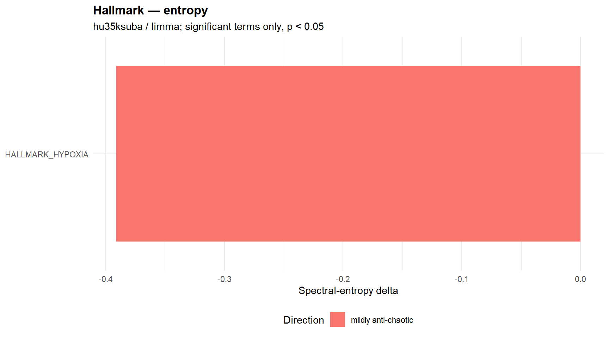
18.0.12.3.20 Significant complexity terms
No significant warehouse rows available for this section.
18.0.12.3.21 Significant entropy terms
| gene_set | semantic_block | n_shared_probes | spectral Δ | shannon Δ | spectral_direction | p_perm_spectral | p_perm_shannon | status |
|---|---|---|---|---|---|---|---|---|
| HALLMARK_HYPOXIA | NA | 20 | -0.391 | 0.171 | mildly anti-chaotic | 0.020 | NA | ok |
18.0.12.3.22 Terms significant in both engines
No significant warehouse rows available for this section.
Context summary
| engine | n_rows | n_gene_sets | n_significant_complexity | n_significant_entropy_spectral | median_shared_probes |
|---|---|---|---|---|---|
| complexity | 1067 | 1067 | 49 | 0 | 8.000 |
| entropy | 1067 | 1067 | 0 | 100 | 8.000 |
18.0.12.3.23 Complexity signal plot
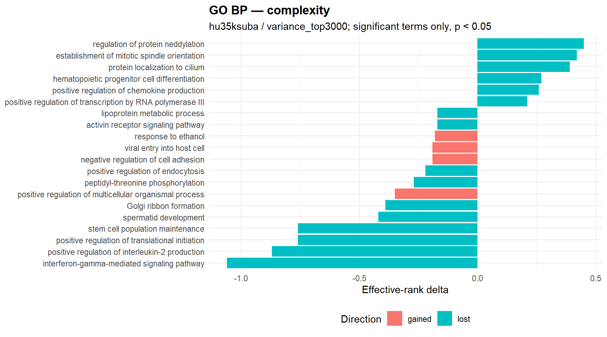
18.0.12.3.24 Entropy signal plot
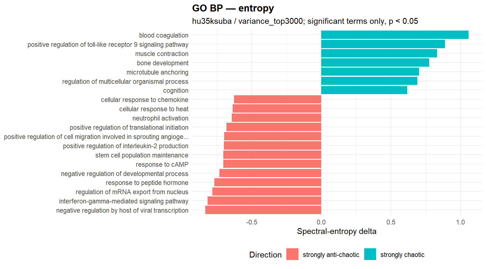
18.0.12.3.25 Significant complexity terms
| gene_set | semantic_block | n_shared_probes | effrank Δ | kappa Δ | direction | p_perm | status |
|---|---|---|---|---|---|---|---|
| positive regulation of chemokine production | positive regulation of cytokine production | 6 | 0.260 | -944.850 | lost | <0.001 | ok |
| positive regulation of endocytosis | regulation of vesicle-mediated transport | 8 | -0.220 | -117749.180 | lost | <0.001 | ok |
| viral entry into host cell | biological process involved in interspecies interaction between organisms | 15 | -0.190 | 494.050 | gained | <0.001 | ok |
| activin receptor signaling pathway | enzyme-linked receptor protein signaling pathway | 6 | -0.170 | -808.170 | lost | <0.001 | ok |
| semaphorin-plexin signaling pathway | cell surface receptor signaling pathway | 13 | -0.140 | 687.690 | gained | <0.001 | ok |
| negative regulation of regulatory T cell differentiation | regulation of leukocyte differentiation | 6 | 0.100 | -690.530 | lost | <0.001 | ok |
| antibacterial humoral response | defense response to symbiont | 5 | 0.020 | -521.150 | lost | <0.001 | ok |
| interferon-gamma-mediated signaling pathway | cytokine-mediated signaling pathway | 5 | -1.060 | -418.640 | lost | 0.010 | ok |
| stem cell population maintenance | biological_process | 6 | -0.760 | -493.380 | lost | 0.010 | ok |
| positive regulation of translational initiation | positive regulation of protein metabolic process | 5 | -0.760 | -480.120 | lost | 0.010 | ok |
| regulation of protein neddylation | regulation of protein modification process | 5 | 0.450 | -240.990 | lost | 0.010 | ok |
| positive regulation of transcription by RNA polymerase III | positive regulation of RNA metabolic process | 5 | 0.210 | -157.350 | lost | 0.010 | ok |
| long-chain fatty-acyl-CoA biosynthetic process | nucleoside phosphate biosynthetic process | 5 | 0.160 | -220.550 | lost | 0.010 | ok |
| cellular response to hormone stimulus | cellular response to hormone stimulus | 9 | -0.120 | 20436.080 | gained | 0.010 | ok |
| negative regulation of ferroptosis | negative regulation of programmed cell death | 5 | 0.120 | -244.300 | lost | 0.010 | ok |
| establishment of mitotic spindle orientation | establishment of organelle localization | 6 | 0.420 | -676.720 | lost | 0.020 | ok |
| Golgi ribbon formation | endomembrane system organization | 5 | -0.390 | -387.390 | lost | 0.020 | ok |
| positive regulation of multicellular organismal process | positive regulation of multicellular organismal process | 5 | -0.350 | 457.990 | gained | 0.020 | ok |
| response to ethanol | response to oxygen-containing compound | 11 | -0.180 | 898.850 | gained | 0.020 | ok |
| amino acid transmembrane transport | transmembrane transport | 5 | 0.100 | -147.850 | lost | 0.020 | ok |
18.0.12.3.26 Significant entropy terms
| gene_set | semantic_block | n_shared_probes | spectral Δ | shannon Δ | spectral_direction | p_perm_spectral | p_perm_shannon | status |
|---|---|---|---|---|---|---|---|---|
| blood coagulation | regulation of body fluid levels | 9 | 1.059 | 0.173 | strongly chaotic | <0.001 | NA | ok |
| interferon-gamma-mediated signaling pathway | cytokine-mediated signaling pathway | 5 | -0.817 | 0.172 | strongly anti-chaotic | <0.001 | NA | ok |
| regulation of mRNA export from nucleus | regulation of cellular localization | 6 | -0.783 | 0.167 | strongly anti-chaotic | <0.001 | NA | ok |
| response to peptide hormone | response to nitrogen compound | 6 | -0.768 | 0.163 | strongly anti-chaotic | <0.001 | NA | ok |
| stem cell population maintenance | biological_process | 6 | -0.703 | 0.163 | strongly anti-chaotic | <0.001 | NA | ok |
| cellular response to heat | response to abiotic stimulus | 8 | -0.638 | 0.173 | strongly anti-chaotic | <0.001 | NA | ok |
| animal organ morphogenesis | animal organ morphogenesis | 10 | 0.513 | 0.179 | strongly chaotic | <0.001 | NA | ok |
| negative regulation of long-term synaptic potentiation | modulation of chemical synaptic transmission | 5 | -0.507 | 0.166 | strongly anti-chaotic | <0.001 | NA | ok |
| aortic valve morphogenesis | heart development | 8 | 0.481 | 0.174 | mildly chaotic | <0.001 | NA | ok |
| negative regulation of cell growth involved in cardiac muscle cell development | developmental growth | 6 | 0.477 | 0.176 | mildly chaotic | <0.001 | NA | ok |
| receptor signaling pathway via STAT | cell surface receptor signaling pathway | 7 | -0.477 | 0.165 | mildly anti-chaotic | <0.001 | NA | ok |
| positive regulation of immune system process | positive regulation of immune system process | 6 | -0.445 | 0.167 | mildly anti-chaotic | <0.001 | NA | ok |
| regulation of protein neddylation | regulation of protein modification process | 5 | 0.427 | 0.173 | mildly chaotic | <0.001 | NA | ok |
| positive regulation of endothelial cell migration | positive regulation of cell migration | 10 | 0.422 | 0.180 | mildly chaotic | <0.001 | NA | ok |
| positive regulation of multicellular organismal process | positive regulation of multicellular organismal process | 5 | -0.411 | 0.164 | mildly anti-chaotic | <0.001 | NA | ok |
| pyroptosis | inflammatory response | 7 | -0.394 | 0.161 | mildly anti-chaotic | <0.001 | NA | ok |
| positive chemotaxis | chemotaxis | 8 | -0.370 | 0.172 | mildly anti-chaotic | <0.001 | NA | ok |
| positive regulation of telomere maintenance | regulation of DNA metabolic process | 7 | -0.272 | 0.174 | mildly anti-chaotic | <0.001 | NA | ok |
| cellular response to interferon-gamma | cellular response to cytokine stimulus | 24 | -0.188 | 0.173 | mildly anti-chaotic | <0.001 | NA | ok |
| G2/M transition of mitotic cell cycle | cell cycle phase transition | 10 | 0.184 | 0.176 | mildly chaotic | <0.001 | NA | ok |
18.0.12.3.27 Terms significant in both engines
| gene_set | semantic_block | n_shared_probes | complexity_effrank Δ | complexity_direction | complexity_p_perm | entropy_spectral Δ | entropy_spectral_direction | entropy_p_perm_spectral | joint_rank_score |
|---|---|---|---|---|---|---|---|---|---|
| stem cell population maintenance | biological_process | 6 | -0.760 | lost | 0.010 | -0.703 | strongly anti-chaotic | <0.001 | 309.653 |
| interferon-gamma-mediated signaling pathway | cytokine-mediated signaling pathway | 5 | -1.060 | lost | 0.010 | -0.817 | strongly anti-chaotic | <0.001 | 309.653 |
| regulation of protein neddylation | regulation of protein modification process | 5 | 0.450 | lost | 0.010 | 0.427 | mildly chaotic | <0.001 | 309.653 |
| positive regulation of multicellular organismal process | positive regulation of multicellular organismal process | 5 | -0.350 | gained | 0.020 | -0.411 | mildly anti-chaotic | <0.001 | 309.352 |
| positive regulation of endocytosis | regulation of vesicle-mediated transport | 8 | -0.220 | lost | <0.001 | -0.235 | mildly anti-chaotic | 0.040 | 309.051 |
| positive regulation of translational initiation | positive regulation of protein metabolic process | 5 | -0.760 | lost | 0.010 | -0.681 | strongly anti-chaotic | 0.040 | 3.398 |
| positive regulation of interleukin-2 production | positive regulation of cytokine production | 8 | -0.870 | lost | 0.030 | -0.699 | strongly anti-chaotic | 0.020 | 3.222 |
| protein neddylation | protein modification by small protein conjugation or removal | 6 | 0.140 | lost | 0.030 | 0.183 | mildly chaotic | 0.020 | 3.222 |
| protein import into mitochondrial matrix | protein localization to organelle | 7 | 0.100 | lost | 0.030 | 0.122 | mildly chaotic | 0.040 | 2.921 |
| spermatid development | reproductive process | 6 | -0.420 | lost | 0.040 | -0.412 | mildly anti-chaotic | 0.040 | 2.796 |
| protein localization to cilium | protein localization to organelle | 7 | 0.390 | lost | 0.040 | 0.370 | mildly chaotic | 0.040 | 2.796 |
18.0.12.3.28 GO semantic clusters
| semantic_cluster_id | semantic_block_name | n_rows | n_terms | n_sig_complexity | n_sig_entropy_spectral | mean_shared_probes |
|---|---|---|---|---|---|---|
| BP_GO_0007166_1 | cell surface receptor signaling pathway | 14 | 7 | 1 | 2 | 15.429 |
| BP_GO_0019221_5 | cytokine-mediated signaling pathway | 4 | 2 | 1 | 2 | 6.500 |
| BP_GO_1902532_1 | negative regulation of intracellular signal transduction | 14 | 7 | 0 | 2 | 11.143 |
| BP_GO_0001819_1 | positive regulation of cytokine production | 12 | 6 | 1 | 1 | 9.667 |
| BP_GO_0035556_4 | intracellular signal transduction | 10 | 5 | 2 | 0 | 12.400 |
| BP_GO_0051247_3 | positive regulation of protein metabolic process | 6 | 3 | 1 | 1 | 12.333 |
| BP_GO_0006952_1 | defense response | 4 | 2 | 0 | 2 | 13.500 |
| BP_GO_0033365_13 | protein localization to organelle | 4 | 2 | 1 | 1 | 6.000 |
| BP_GO_0033993_4 | response to lipid | 4 | 2 | 0 | 2 | 5.000 |
| BP_GO_0044419_3 | biological process involved in interspecies interaction between organisms | 4 | 2 | 0 | 2 | 5.500 |
| BP_GO_1902532_3 | negative regulation of intracellular signal transduction | 4 | 2 | 0 | 2 | 16.500 |
| BP_GO_0022414_2 | reproductive process | 2 | 1 | 1 | 1 | 6.000 |
| BP_GO_0031399_6 | regulation of protein modification process | 2 | 1 | 1 | 1 | 5.000 |
| BP_GO_0033365_5 | protein localization to organelle | 2 | 1 | 1 | 1 | 7.000 |
| BP_GO_0051240_2 | positive regulation of multicellular organismal process | 2 | 1 | 1 | 1 | 5.000 |
| BP_GO_0060627_2 | regulation of vesicle-mediated transport | 2 | 1 | 1 | 1 | 8.000 |
| BP_GO_0070647_6 | protein modification by small protein conjugation or removal | 2 | 1 | 1 | 1 | 6.000 |
| BP_biological_process_26 | biological_process | 2 | 1 | 1 | 1 | 6.000 |
| BP_GO_0051254_1 | positive regulation of RNA metabolic process | 14 | 7 | 1 | 0 | 63.429 |
| BP_GO_0030163_2 | protein catabolic process | 12 | 6 | 0 | 1 | 29.500 |
Context summary
| engine | n_rows | n_gene_sets | n_significant_complexity | n_significant_entropy_spectral | median_shared_probes |
|---|---|---|---|---|---|
| complexity | 390 | 390 | 11 | 0 | 9.000 |
| entropy | 390 | 390 | 0 | 37 | 9.000 |
18.0.12.3.29 Complexity signal plot
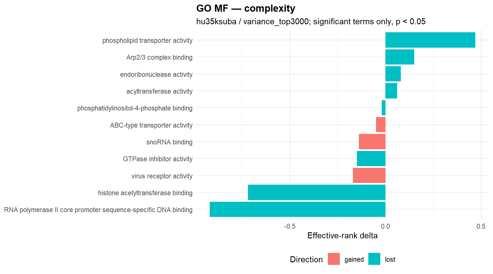
18.0.12.3.30 Entropy signal plot
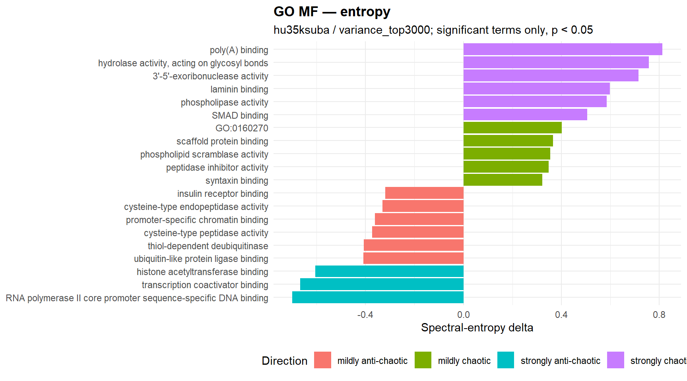
18.0.12.3.31 Significant complexity terms
| gene_set | semantic_block | n_shared_probes | effrank Δ | kappa Δ | direction | p_perm | status |
|---|---|---|---|---|---|---|---|
| phosphatidylinositol-4-phosphate binding | lipid binding | 5 | -0.020 | -310.190 | lost | 0.010 | ok |
| RNA polymerase II core promoter sequence-specific DNA binding | DNA binding | 7 | -0.920 | -1311.500 | lost | 0.020 | ok |
| phospholipid transporter activity | transporter activity | 8 | 0.470 | -36094.690 | lost | 0.020 | ok |
| snoRNA binding | RNA binding | 8 | -0.140 | 17512.940 | gained | 0.020 | ok |
| histone acetyltransferase binding | enzyme binding | 8 | -0.720 | -39359.120 | lost | 0.030 | ok |
| virus receptor activity | protein binding | 13 | -0.170 | 437.520 | gained | 0.030 | ok |
| Arp2/3 complex binding | protein-containing complex binding | 5 | 0.150 | -362.850 | lost | 0.030 | ok |
| ABC-type transporter activity | active transmembrane transporter activity | 5 | -0.050 | 180.250 | gained | 0.030 | ok |
| GTPase inhibitor activity | enzyme regulator activity | 5 | -0.150 | -289.570 | lost | 0.040 | ok |
| endoribonuclease activity | catalytic activity | 8 | 0.080 | -14473.180 | lost | 0.040 | ok |
| acyltransferase activity | acyltransferase activity | 19 | 0.060 | -97.900 | lost | 0.040 | ok |
18.0.12.3.32 Significant entropy terms
| gene_set | semantic_block | n_shared_probes | spectral Δ | shannon Δ | spectral_direction | p_perm_spectral | p_perm_shannon | status |
|---|---|---|---|---|---|---|---|---|
| hydrolase activity, acting on glycosyl bonds | hydrolase activity | 8 | 0.758 | 0.173 | strongly chaotic | <0.001 | NA | ok |
| histone acetyltransferase binding | enzyme binding | 8 | -0.605 | 0.167 | strongly anti-chaotic | <0.001 | NA | ok |
| thiol-dependent deubiquitinase | peptidase activity | 13 | -0.407 | 0.170 | mildly anti-chaotic | <0.001 | NA | ok |
| cysteine-type peptidase activity | peptidase activity | 16 | -0.373 | 0.168 | mildly anti-chaotic | <0.001 | NA | ok |
| cysteine-type endopeptidase activity | peptidase activity | 11 | -0.331 | 0.169 | mildly anti-chaotic | <0.001 | NA | ok |
| AP-3 adaptor complex binding | protein-containing complex binding | 5 | -0.141 | 0.163 | mildly anti-chaotic | <0.001 | NA | ok |
| poly(A) binding | RNA binding | 10 | 0.814 | 0.179 | strongly chaotic | 0.010 | NA | ok |
| RNA polymerase II core promoter sequence-specific DNA binding | DNA binding | 7 | -0.700 | 0.171 | strongly anti-chaotic | 0.010 | NA | ok |
| phospholipid scramblase activity | transporter activity | 7 | 0.355 | 0.180 | mildly chaotic | 0.010 | NA | ok |
| integrin binding | protein-containing complex binding | 14 | 0.296 | 0.181 | mildly chaotic | 0.010 | NA | ok |
| transcription corepressor activity | protein-macromolecule adaptor activity | 52 | 0.219 | 0.174 | mildly chaotic | 0.010 | NA | ok |
| pre-mRNA binding | RNA binding | 9 | 0.187 | 0.182 | mildly chaotic | 0.010 | NA | ok |
| transcription coactivator binding | transcription factor binding | 10 | -0.668 | 0.166 | strongly anti-chaotic | 0.020 | NA | ok |
| SMAD binding | protein binding | 20 | 0.507 | 0.171 | strongly chaotic | 0.020 | NA | ok |
| ubiquitin-like protein ligase binding | enzyme binding | 11 | -0.409 | 0.171 | mildly anti-chaotic | 0.020 | NA | ok |
| promoter-specific chromatin binding | binding | 18 | -0.361 | 0.168 | mildly anti-chaotic | 0.020 | NA | ok |
| syntaxin binding | protein binding | 9 | 0.323 | 0.175 | mildly chaotic | 0.020 | NA | ok |
| chemoattractant activity | molecular function regulator activity | 6 | -0.273 | 0.176 | mildly anti-chaotic | 0.020 | NA | ok |
| O-acyltransferase activity | acyltransferase activity | 6 | 0.254 | 0.178 | mildly chaotic | 0.020 | NA | ok |
| actin filament binding | protein-containing complex binding | 40 | 0.249 | 0.175 | mildly chaotic | 0.020 | NA | ok |
18.0.12.3.33 Terms significant in both engines
| gene_set | semantic_block | n_shared_probes | complexity_effrank Δ | complexity_direction | complexity_p_perm | entropy_spectral Δ | entropy_spectral_direction | entropy_p_perm_spectral | joint_rank_score |
|---|---|---|---|---|---|---|---|---|---|
| histone acetyltransferase binding | enzyme binding | 8 | -0.720 | lost | 0.030 | -0.605 | strongly anti-chaotic | <0.001 | 309.176 |
| RNA polymerase II core promoter sequence-specific DNA binding | DNA binding | 7 | -0.920 | lost | 0.020 | -0.700 | strongly anti-chaotic | 0.010 | 3.699 |
| GTPase inhibitor activity | enzyme regulator activity | 5 | -0.150 | lost | 0.040 | -0.181 | mildly anti-chaotic | 0.020 | 3.097 |
18.0.12.3.34 GO semantic clusters
| semantic_cluster_id | semantic_block_name | n_rows | n_terms | n_sig_complexity | n_sig_entropy_spectral | mean_shared_probes |
|---|---|---|---|---|---|---|
| MF_GO_0003677_3 | DNA binding | 8 | 4 | 1 | 1 | 34.000 |
| MF_GO_0008233_1 | peptidase activity | 8 | 4 | 0 | 2 | 27.250 |
| MF_GO_0030234_5 | enzyme regulator activity | 8 | 4 | 0 | 2 | 6.000 |
| MF_GO_0016746_7 | acyltransferase activity | 6 | 3 | 1 | 1 | 10.000 |
| MF_GO_0019899_11 | enzyme binding | 2 | 1 | 1 | 1 | 8.000 |
| MF_GO_0030234_7 | enzyme regulator activity | 2 | 1 | 1 | 1 | 5.000 |
| MF_GO_0098772_3 | molecular function regulator activity | 8 | 4 | 0 | 1 | 14.250 |
| MF_GO_0003723_3 | RNA binding | 6 | 3 | 0 | 1 | 9.333 |
| MF_GO_0005515_17 | protein binding | 6 | 3 | 0 | 1 | 24.000 |
| MF_GO_0008134_2 | transcription factor binding | 6 | 3 | 0 | 1 | 12.000 |
| MF_GO_0030674_1 | protein-macromolecule adaptor activity | 6 | 3 | 0 | 1 | 53.667 |
| MF_GO_0003824_13 | catalytic activity | 4 | 2 | 0 | 1 | 17.500 |
| MF_GO_0005488_2 | binding | 4 | 2 | 0 | 1 | 65.500 |
| MF_GO_0005515_58 | protein binding | 4 | 2 | 0 | 1 | 12.500 |
| MF_GO_0008289_14 | lipid binding | 4 | 2 | 1 | 0 | 5.000 |
| MF_GO_0016788_2 | hydrolase activity, acting on ester bonds | 4 | 2 | 0 | 1 | 8.000 |
| MF_GO_0019899_8 | enzyme binding | 4 | 2 | 0 | 1 | 41.500 |
| MF_GO_0003677_8 | DNA binding | 2 | 1 | 0 | 1 | 35.000 |
| MF_GO_0003723_14 | RNA binding | 2 | 1 | 0 | 1 | 9.000 |
| MF_GO_0003723_9 | RNA binding | 2 | 1 | 1 | 0 | 8.000 |
Context summary
| engine | n_rows | n_gene_sets | n_significant_complexity | n_significant_entropy_spectral | median_shared_probes |
|---|---|---|---|---|---|
| complexity | 53 | 53 | 0 | 0 | 22.000 |
| entropy | 53 | 53 | 0 | 5 | 22.000 |
18.0.12.3.35 Complexity signal plot
No significant complexity terms available for plotting.
18.0.12.3.36 Entropy signal plot
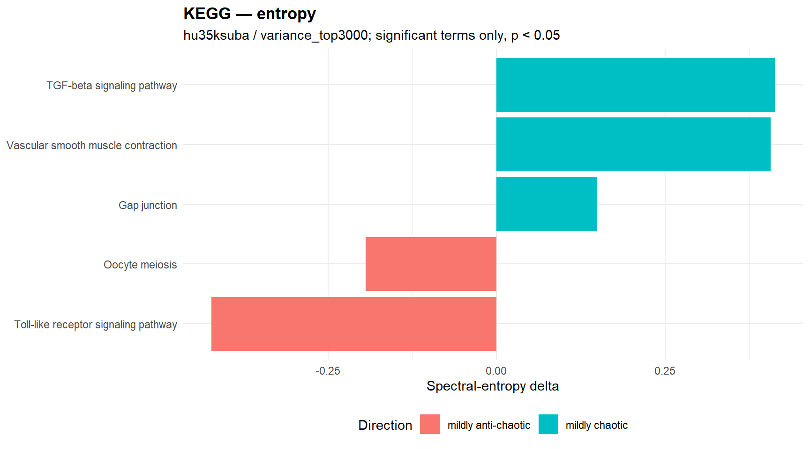
18.0.12.3.37 Significant complexity terms
No significant warehouse rows available for this section.
18.0.12.3.38 Significant entropy terms
| gene_set | semantic_block | n_shared_probes | spectral Δ | shannon Δ | spectral_direction | p_perm_spectral | p_perm_shannon | status |
|---|---|---|---|---|---|---|---|---|
| TGF-beta signaling pathway | NA | 13 | 0.413 | 0.172 | mildly chaotic | 0.010 | NA | ok |
| Vascular smooth muscle contraction | NA | 16 | 0.407 | 0.175 | mildly chaotic | 0.010 | NA | ok |
| Gap junction | NA | 14 | 0.149 | 0.179 | mildly chaotic | 0.020 | NA | ok |
| Toll-like receptor signaling pathway | NA | 15 | -0.423 | 0.163 | mildly anti-chaotic | 0.030 | NA | ok |
| Oocyte meiosis | NA | 24 | -0.194 | 0.173 | mildly anti-chaotic | 0.040 | NA | ok |
18.0.12.3.39 Terms significant in both engines
No significant warehouse rows available for this section.
Context summary
| engine | n_rows | n_gene_sets | n_significant_complexity | n_significant_entropy_spectral | median_shared_probes |
|---|---|---|---|---|---|
| complexity | 13 | 13 | 0 | 0 | 48.000 |
| entropy | 13 | 13 | 0 | 0 | 48.000 |
18.0.12.3.40 Complexity signal plot
No significant complexity terms available for plotting.
18.0.12.3.41 Entropy signal plot
No significant entropy terms available for plotting.
18.0.12.3.42 Significant complexity terms
No significant warehouse rows available for this section.
18.0.12.3.43 Significant entropy terms
No significant warehouse rows available for this section.
18.0.12.3.44 Terms significant in both engines
No significant warehouse rows available for this section.
18.0.12.4 Skipped / inadmissible gene sets
These counts summarize chip-level gene-set admissibility failures. They are not interpreted as repeated comparison-level biological results.
| comparison | chip | filter_regime | gene_set_mode | engine | reason | n_skipped |
|---|---|---|---|---|---|---|
| GC/LBCL | hu35ksuba | limma | GO_BP | complexity | usable gene-set probes below biological admissibility threshold: 0 < 5 | 402 |
| GC/LBCL | hu35ksuba | limma | GO_BP | complexity | usable gene-set probes below biological admissibility threshold: 1 < 5 | 547 |
| GC/LBCL | hu35ksuba | limma | GO_BP | complexity | usable gene-set probes below biological admissibility threshold: 2 < 5 | 429 |
| GC/LBCL | hu35ksuba | limma | GO_BP | complexity | usable gene-set probes below biological admissibility threshold: 3 < 5 | 251 |
| GC/LBCL | hu35ksuba | limma | GO_BP | complexity | usable gene-set probes below biological admissibility threshold: 4 < 5 | 170 |
| GC/LBCL | hu35ksuba | limma | GO_BP | entropy | usable gene-set probes below biological admissibility threshold: 0 < 5 | 402 |
| GC/LBCL | hu35ksuba | limma | GO_BP | entropy | usable gene-set probes below biological admissibility threshold: 1 < 5 | 547 |
| GC/LBCL | hu35ksuba | limma | GO_BP | entropy | usable gene-set probes below biological admissibility threshold: 2 < 5 | 429 |
| GC/LBCL | hu35ksuba | limma | GO_BP | entropy | usable gene-set probes below biological admissibility threshold: 3 < 5 | 251 |
| GC/LBCL | hu35ksuba | limma | GO_BP | entropy | usable gene-set probes below biological admissibility threshold: 4 < 5 | 170 |
| GC/LBCL | hu35ksuba | limma | GO_MF | complexity | usable gene-set probes below biological admissibility threshold: 0 < 5 | 137 |
| GC/LBCL | hu35ksuba | limma | GO_MF | complexity | usable gene-set probes below biological admissibility threshold: 1 < 5 | 189 |
| GC/LBCL | hu35ksuba | limma | GO_MF | complexity | usable gene-set probes below biological admissibility threshold: 2 < 5 | 136 |
| GC/LBCL | hu35ksuba | limma | GO_MF | complexity | usable gene-set probes below biological admissibility threshold: 3 < 5 | 93 |
| GC/LBCL | hu35ksuba | limma | GO_MF | complexity | usable gene-set probes below biological admissibility threshold: 4 < 5 | 43 |
| GC/LBCL | hu35ksuba | limma | GO_MF | entropy | usable gene-set probes below biological admissibility threshold: 0 < 5 | 137 |
| GC/LBCL | hu35ksuba | limma | GO_MF | entropy | usable gene-set probes below biological admissibility threshold: 1 < 5 | 189 |
| GC/LBCL | hu35ksuba | limma | GO_MF | entropy | usable gene-set probes below biological admissibility threshold: 2 < 5 | 136 |
| GC/LBCL | hu35ksuba | limma | GO_MF | entropy | usable gene-set probes below biological admissibility threshold: 3 < 5 | 93 |
| GC/LBCL | hu35ksuba | limma | GO_MF | entropy | usable gene-set probes below biological admissibility threshold: 4 < 5 | 43 |
| GC/LBCL | hu35ksuba | limma | KEGG | complexity | usable gene-set probes below biological admissibility threshold: 2 < 10 | 2 |
| GC/LBCL | hu35ksuba | limma | KEGG | complexity | usable gene-set probes below biological admissibility threshold: 3 < 10 | 1 |
| GC/LBCL | hu35ksuba | limma | KEGG | complexity | usable gene-set probes below biological admissibility threshold: 4 < 10 | 4 |
| GC/LBCL | hu35ksuba | limma | KEGG | complexity | usable gene-set probes below biological admissibility threshold: 5 < 10 | 3 |
| GC/LBCL | hu35ksuba | limma | KEGG | complexity | usable gene-set probes below biological admissibility threshold: 6 < 10 | 6 |
| GC/LBCL | hu35ksuba | limma | KEGG | complexity | usable gene-set probes below biological admissibility threshold: 7 < 10 | 3 |
| GC/LBCL | hu35ksuba | limma | KEGG | complexity | usable gene-set probes below biological admissibility threshold: 8 < 10 | 5 |
| GC/LBCL | hu35ksuba | limma | KEGG | complexity | usable gene-set probes below biological admissibility threshold: 9 < 10 | 4 |
| GC/LBCL | hu35ksuba | limma | KEGG | entropy | usable gene-set probes below biological admissibility threshold: 2 < 10 | 2 |
| GC/LBCL | hu35ksuba | limma | KEGG | entropy | usable gene-set probes below biological admissibility threshold: 3 < 10 | 1 |
| GC/LBCL | hu35ksuba | limma | KEGG | entropy | usable gene-set probes below biological admissibility threshold: 4 < 10 | 4 |
| GC/LBCL | hu35ksuba | limma | KEGG | entropy | usable gene-set probes below biological admissibility threshold: 5 < 10 | 3 |
| GC/LBCL | hu35ksuba | limma | KEGG | entropy | usable gene-set probes below biological admissibility threshold: 6 < 10 | 6 |
| GC/LBCL | hu35ksuba | limma | KEGG | entropy | usable gene-set probes below biological admissibility threshold: 7 < 10 | 3 |
| GC/LBCL | hu35ksuba | limma | KEGG | entropy | usable gene-set probes below biological admissibility threshold: 8 < 10 | 5 |
| GC/LBCL | hu35ksuba | limma | KEGG | entropy | usable gene-set probes below biological admissibility threshold: 9 < 10 | 4 |
| GC/LBCL | hu35ksuba | limma | MSIGDB | complexity | usable gene-set probes below biological admissibility threshold: 9 < 10 | 1 |
| GC/LBCL | hu35ksuba | limma | MSIGDB | entropy | usable gene-set probes below biological admissibility threshold: 9 < 10 | 1 |
| GC/LBCL | hu35ksuba | variance_top3000 | GO_BP | complexity | usable gene-set probes below biological admissibility threshold: 0 < 5 | 46 |
| GC/LBCL | hu35ksuba | variance_top3000 | GO_BP | complexity | usable gene-set probes below biological admissibility threshold: 1 < 5 | 181 |
| GC/LBCL | hu35ksuba | variance_top3000 | GO_BP | complexity | usable gene-set probes below biological admissibility threshold: 2 < 5 | 307 |
| GC/LBCL | hu35ksuba | variance_top3000 | GO_BP | complexity | usable gene-set probes below biological admissibility threshold: 3 < 5 | 337 |
| GC/LBCL | hu35ksuba | variance_top3000 | GO_BP | complexity | usable gene-set probes below biological admissibility threshold: 4 < 5 | 311 |
| GC/LBCL | hu35ksuba | variance_top3000 | GO_BP | entropy | usable gene-set probes below biological admissibility threshold: 0 < 5 | 46 |
| GC/LBCL | hu35ksuba | variance_top3000 | GO_BP | entropy | usable gene-set probes below biological admissibility threshold: 1 < 5 | 181 |
| GC/LBCL | hu35ksuba | variance_top3000 | GO_BP | entropy | usable gene-set probes below biological admissibility threshold: 2 < 5 | 307 |
| GC/LBCL | hu35ksuba | variance_top3000 | GO_BP | entropy | usable gene-set probes below biological admissibility threshold: 3 < 5 | 337 |
| GC/LBCL | hu35ksuba | variance_top3000 | GO_BP | entropy | usable gene-set probes below biological admissibility threshold: 4 < 5 | 311 |
| GC/LBCL | hu35ksuba | variance_top3000 | GO_MF | complexity | usable gene-set probes below biological admissibility threshold: 0 < 5 | 21 |
| GC/LBCL | hu35ksuba | variance_top3000 | GO_MF | complexity | usable gene-set probes below biological admissibility threshold: 1 < 5 | 74 |
| GC/LBCL | hu35ksuba | variance_top3000 | GO_MF | complexity | usable gene-set probes below biological admissibility threshold: 2 < 5 | 104 |
| GC/LBCL | hu35ksuba | variance_top3000 | GO_MF | complexity | usable gene-set probes below biological admissibility threshold: 3 < 5 | 109 |
| GC/LBCL | hu35ksuba | variance_top3000 | GO_MF | complexity | usable gene-set probes below biological admissibility threshold: 4 < 5 | 78 |
| GC/LBCL | hu35ksuba | variance_top3000 | GO_MF | entropy | usable gene-set probes below biological admissibility threshold: 0 < 5 | 21 |
| GC/LBCL | hu35ksuba | variance_top3000 | GO_MF | entropy | usable gene-set probes below biological admissibility threshold: 1 < 5 | 74 |
| GC/LBCL | hu35ksuba | variance_top3000 | GO_MF | entropy | usable gene-set probes below biological admissibility threshold: 2 < 5 | 104 |
| GC/LBCL | hu35ksuba | variance_top3000 | GO_MF | entropy | usable gene-set probes below biological admissibility threshold: 3 < 5 | 109 |
| GC/LBCL | hu35ksuba | variance_top3000 | GO_MF | entropy | usable gene-set probes below biological admissibility threshold: 4 < 5 | 78 |
| GC/LBCL | hu35ksuba | variance_top3000 | KEGG | complexity | usable gene-set probes below biological admissibility threshold: 6 < 10 | 1 |
| GC/LBCL | hu35ksuba | variance_top3000 | KEGG | complexity | usable gene-set probes below biological admissibility threshold: 8 < 10 | 2 |
| GC/LBCL | hu35ksuba | variance_top3000 | KEGG | complexity | usable gene-set probes below biological admissibility threshold: 9 < 10 | 1 |
| GC/LBCL | hu35ksuba | variance_top3000 | KEGG | entropy | usable gene-set probes below biological admissibility threshold: 6 < 10 | 1 |
| GC/LBCL | hu35ksuba | variance_top3000 | KEGG | entropy | usable gene-set probes below biological admissibility threshold: 8 < 10 | 2 |
| GC/LBCL | hu35ksuba | variance_top3000 | KEGG | entropy | usable gene-set probes below biological admissibility threshold: 9 < 10 | 1 |
18.0.12.5 Interpretation note
These panels are intended to support exploratory biological reading of structurally characterized tumor states. Stronger interpretive priority should be given to signals that recur within a chip across filtering regimes, and then to patterns that recur across chips, engines, and semantic clusters. Results should not be interpreted as pooled chip-level or pooled filter-level evidence unless a later concordance module explicitly evaluates that recurrence.